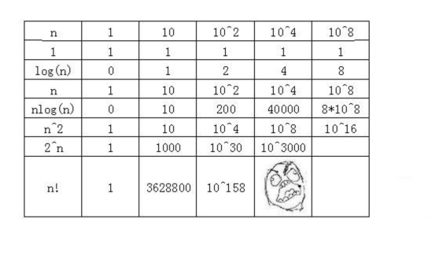

时间复杂度（Time Complexity)）定义
时间频度：
一个算法执行所耗费的时间，从理论上是不能算出来的，必须上机运行测试才能知道。
但我们不可能也没有必要对每个算法都上机测试。
一个算法花费的时间与算法中语句的执行次数成正比例，哪个算法中语句执行次数多，它花费时间就多。
一个算法中的语句执行次数称为语句频度或时间频度，表示为T（n），n表示问题的规模
时间复杂度
但有时我们想知道它变化时呈现什么规律，想知道问题的规模，而不是具体的次数，此时引入时间复杂度。
一般情况下，算法中基本操作重复执行的次数是问题规模n的某个函数，用T(n)表示，
若有某个辅助函数f(n),使得当n趋近于无穷大时，T(n)/f(n)的极限值为不等于零的常数，则称f(n)是T(n)的同数量级函数。
记作T(n)=O(f(n)),称O(f(n)) 为算法的渐进时间复杂度，简称时间复杂度。
T(n)=O(f(n))
或者说：时间复杂度就是时间频度去掉低阶项和首项常数。
注意：时间频度与时间复杂度是不同的，时间频度不同但时间复杂度可能相同。
比如：某两个算法的时间频度是 T（n） = 100000n2+10n+6 T(n) = n2 T(n) = n3
但是时间复杂度都是 T（n） = O（n2）
最坏时间复杂度和平均时间复杂度
最坏情况下的时间复杂度称最坏时间复杂度。一般不特别说明，讨论的时间复杂度均是最坏情况下的时间复杂度。
这样做的原因是：最坏情况下的时间复杂度是算法在任何输入实例上运行时间的上界，这就保证了算法的运行时间不会比任何更长。
在最坏情况下的时间复杂度为T(n)=O(n)，它表示对于任何输入实例,该算法的运行时间不可能大于O(n)。
平均时间复杂度是指所有可能的输入实例均以等概率出现的情况下，算法的期望运行时间。鉴于平均复杂度
第一，难计算
第二，有很多算法的平均情况和最差情况的复杂度是一样的。
所以一般讨论最坏时间复杂度
比如 我要求你在字典里查同一个字，告诉我这个字在字典的那一页。
如果一页一页的翻，你需要多少时间呢？
最优的情况就是这个字在第一页，
最坏的情况就是这个字是 整本字典的最后一个字。
所以即使我故意为难你，你也不会花费比找整本字典最后一个字还长的时间。
当然，此时聪明的你就会想用部首、笔画等去查，才不要傻乎乎的一页一页翻，
此时的你就会择优选择，因为此时你最坏得情况就是我给你部首笔画最多、除部首外笔画最多的一个超级复杂的一个字，但显然比翻整本字典快得多。
为了进一步说明算法的时间复杂度，我们定义 Ο、Ω、Θ符号。
Ο(欧米可荣)符号给出了算法时间复杂度的上界（最坏情况 <=），比如T（n） =O（n2）
Ω(欧米伽)符号给出了时间复杂度的下界（最好情况 >=），比如T（n） =Ω（n2）
而Θ(西塔)给出了算法时间复杂度的精确阶（最好和最坏是同一个阶 =），比如T（n） =Θ（n2）
时间复杂度计算
根本没有必要计算时间频度，即使计算处理还要忽略常量、低次幂和最高次幂的系数，所以可以采用如下简单方法：
⑴ 找出算法中的基本语句；
算法中执行次数最多的那条语句就是基本语句，通常是最内层循环的循环体。
⑵ 计算基本语句的执行次数的数量级；
只需计算基本语句执行次数的数量级，这就意味着只要保证基本语句执行次数的函数中的最高次幂正确即可，
可以忽略所有低次幂和最高次幂的系数。这样能够简化算法分析，并且使注意力集中在最重要的一点上：增长率。
⑶ 用大Ο记号表示算法的时间性能。
将基本语句执行次数的数量级放入大Ο记号中。
时间复杂度举例
一个简单语句的时间复杂度为O(1)。
int count=0;
100个简单语句的时间复杂度也为O(1)。（100是常数，不是趋向无穷大的n）
int count=0;
一个循环的时间复杂度为O(n)。
int n=8, count=0;
for (int i=1; i<=n; i++)
count++;
T(n)=O(n)
时间复杂度为O(log2 n)的循环语句。
int n=8, count=0;
for (int i=1; i<=n; i*=2)
count++;
时间复杂度为O(n2)的二重循环。
int n=8, count=0;
for (int i=1; i<=n; i++)
for (int j=1; j<=n; j++)
count++;
时间复杂度为O(nlog2n)的二重循环。
int n=8, count=0;
for (int i=1; i<=n; i*=2)
for (int j=1; j<=n; j++)
count++;
时间复杂度为O(n2)的二重循环。
int n=8, count=0;
for (int i=1; i<=n; i++)
for (int j=1; j<=i; j++)
count++;
需要复杂些数学运算：1+2+3+.....+n=(n+1)*n/2 时间复杂度是 O(n2)
时间复杂度为O(n2)的二重循环。
int n=8, count=0;
for (int i=1; i<=n; i++)
for (int j=1; j<=i; j++)
count++;
后面讲解查找和排序算法时会大量的设计时间复杂度，作为选择查找和排序算法的重要依据
常用的时间复杂度级别
常数阶O(1)
对数阶O(log2n)
线性阶O(n)
线性对数阶O(n*log2n)
平方阶O(n2)
立方阶O(n3)
...
k次方阶O(nk)
指数阶O(2n)
阶乘阶O(n!)
上面各种时间复杂度级别，执行效率越来越低。

大家发现对数阶O(log2n)和线性阶O(n)的效率差异了吗，当n=10的8次方（1亿）时，执行此时一个是1亿次，一个是8次。
所以编写算法时一定要注意时间复杂度的选择。